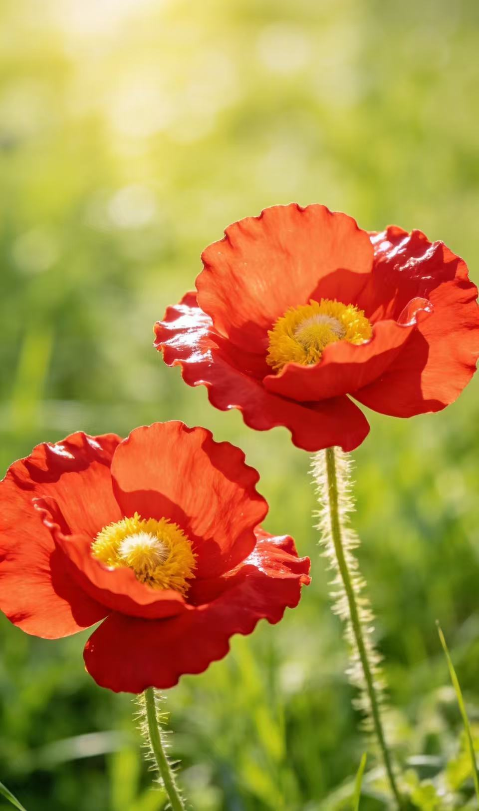

在百花争艳的植物王国里，虞美人与罂粟仿佛一对容貌相似的“姐妹花”。它们同属罂粟科，花瓣都薄如蝉翼，花色同样鲜艳夺目，乍一看很容易混淆。然而，一株是装点庭园的观赏植物，另一株却是被法律严格禁止的毒品原植物。它们的命运，早在漫长的进化过程中就已注定。

想要分清这对“姐妹花”，可以从几个关键部位入手。
虞美人全株覆盖着明显的糙毛，用手轻轻触摸能感到细微的粗糙感。它的分枝多而纤细，整株植物给人一种“弱不禁风”的印象，风一吹便轻轻摇曳。而罂粟的植株则光滑无毛，茎秆表面还覆有一层白粉，看起来油亮厚实。它的茎干粗壮，分枝较少，姿态挺拔，显得“身强力壮”。
虞美人的叶片是羽状深裂，像被精心裁剪过，叶面较窄，质地单薄。罂粟的叶片则呈锯齿状，边缘虽有起伏但叶片本身并不分裂，叶面宽厚，与茎秆一样泛着灰绿色。
虞美人的花朵相对小巧，花径约5至6厘米，花瓣质地柔嫩如绸缎，通常只有四片，边缘平滑，颜色多为红、粉、白，花心处常带有深色斑块。罂粟的花朵则要大得多，花径可达10厘米，花瓣厚实且富有光泽，边缘有时会开裂，重瓣品种不少，花色也更为浓郁。
这是最直观、最确凿的判断依据。虞美人的果实较小，直径约1厘米，顶部带有一圈绒毛，成熟后果实是下垂的。罂粟的果实则是它的数倍大，直径可达4至7厘米，表面光滑无毛，呈直立状，形似一个圆润的小酒坛。
这对“姐妹花”之所以命运悬殊，根源在于它们体内化学成分的差异。
虞美人与罂粟花语截然不同：虞美人象征离别与安慰，源于“霸王别姬”的传说；罂粟则代表死亡与迷醉，美丽中暗含危险。罂粟被称为“死亡之花”，是因为它的植株体内含有丰富的生物碱，包括吗啡、可卡因、罂粟碱等30多种物质。当人们在它的青绿色蒴果上划出伤口，流出的白色乳汁在空气中氧化变黑，便制得了生鸦片。生鸦片进一步提纯可得吗啡，而吗啡再经过化学处理，就能合成出毒性极烈的海洛因。它是一年生草本植物，花期一过便完成生命轮回，但它的“毒害”却可能毁掉无数人的一生。
虞美人与罂粟同科，虽然全株也可入药，含有一些生物碱，具备镇咳、止泻等功效，但它不含有能让人产生药物依赖和严重危害的毒品成分。因此，在我国它被允许作为观赏植物广泛种植，无论公园花海还是庭院一角，都能见到它轻盈绽放的身影。
在我国，对毒品原植物的种植有着严格的法律规定。罂粟属于国家严格管控的毒品原植物，任何个人和组织都不得私自种植。根据《中华人民共和国刑法》第三百五十一条，非法种植罂粟500株以上即构成犯罪，最高可判处五年以上有期徒刑。即使在科研机构或植物园进行活体罂粟展示，也必须经过公安部等相关部门严格批准，并在严密的安保措施下进行，目的是向公众普及禁毒知识，而不是供人观赏。
如果你在日常生活中发现疑似罂粟的植物，请立即向公安机关举报。每一株毒品的源头被切断，都可能阻止一个家庭坠入深渊。
虞美人可以装点我们的花园和生活，而罂粟，哪怕只种一株，也是触碰法律红线。学会分辨它们，不仅是为了满足好奇心，更是为了守住远离毒品的第一道防线。